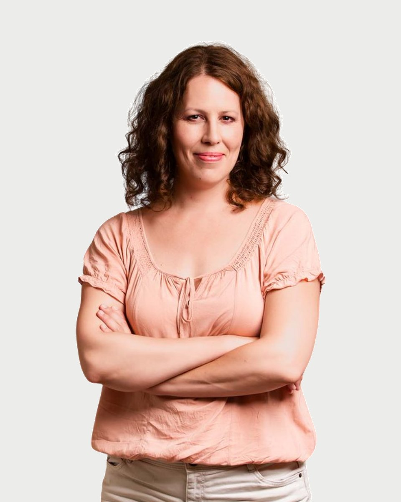

Regiszter 28 · Klinikai szakpszichológus
Rónai
Zsófia

Amiben segítek
- Szülő-gyerek konfliktusok megoldása
- Önértékelés, önelfogadás
- Beilleszkedés segítése
- Szorongások oldása
- Pszichoszomatikus panaszok okainak feltárása
- Tanulási nehézségek lelki okainak oldása
- Párkapcsolatok
- Pályakezdés, elindulás a felnőtté válás útján
Aki kifelé néz, álmodik. Aki befelé néz, fölébred. (Carl Gustav Jung)
Rólam
Életkortól függetlenül mindenki életében vannak olyan időszakok, mikor úgy érzi, megakadt, és sehogy sem tud úrrá lenni a benne kavargó rossz érzéseken, kiutat találni nehéz élethelyzetéből.
Ilyenkor különösen jó lehet egy kapaszkodót találni. Olyan új nézőpontot felfedezni, ami segít rálátni a problémáinkra és saját magunkra. Ez a fogódzó lehet a pszichológiai segítségnyújtás.
Abban hiszek, hogy ha közösen azon dolgozunk, hogy az Ön életének kirakósdarabjai egy új formában, szemléletben álljanak össze, akkor ez a tapasztalás és tudás tovább tudja lendíteni a nehézségeken, elakadásokon.
Ezek az elakadások sokszor generációkon keresztül adódnak tovább a családban. Olyan tudattalan mintákat követünk életünkben, amelyek észrevétlenül határozzák meg választásainkat, döntéseinket, kapcsolatainkat. Ha fel tudjuk fedni ezeket a mintákat, akkor lehetőségünk nyílik arra, hogy tudatosan átírjuk ezeket, sőt arra is, hogy majd gyermekeinknek már az újakat adjuk tovább, és ők egy könnyebb úton járhassanak majd.
Nagyon fontosnak tartom, hogy ez a munka nem csak a közös gondolkodásról szól: olyan kapcsolat két ember között, amelyben meg lehet élni a teljes, ítélkezéstől mentes elfogadást, odafordulást, az igazi figyelmet. Ez a kapcsolat is egy minta lehet, aminek megtapasztalása segít más kapcsolataink újradefiniálásában.
Pszichológusként ezt a közös munkálkodást ajánlom a hozzám forduló serdülőknek, szülőknek és felnőtteknek.
Várom szeretettel!
Rónai Zsófia díja 18-25 ezer forint alkalmanként.
Képzés és szakmai út
A képzések és a szupervízió az akkreditált szakképzőhely rendjében folynak. Mit jelent ez Önnek
Iskolai végzettség
További képzések
Katatim Imaginatív Pszichoterápiás képzés folyamatban
Családterapeuta képzés folyamatban
Munkahelyek
Magánrendelés keretében egyéni tanácsadás gyermekek, serdülők és felnőttek számára, családi konzultáció kettős vezetéssel
Szupervízió és saját élmények
Munkámban elengedhetetlennek tartom a folyamatos képződést, fejlődést. Ez egyrészről az újabb és újabb módszerek elsajátítását jelenti, másrészről az állandó szupervíziót, egyéni vagy éppen csoportos formában, mely folyamatos szakmai felügyeletet és segítséget biztosít számomra.
Egy pszichológus a saját személyiségével dolgozik, ezért nagyon fontos számomra, hogy az önismeretemet is fejlesszem. Ezt segíti elő a csoportos (pszichodráma, katathym imaginatív terápiás saját élmények) és egyéni terápiában való részvétel is.
Tanítómesterek
Akiknél a módszereket tanulta
- Kácsándi Elvira integratív pszichoterapeuta, KIP kiképző terapeuta
- Dr. Szamosi Éva gyermekpszichoterapeuta, hipnózis pszichoterapeuta, integratív pszichoterapeuta, pszichodráma pszichoterapeuta, személyközpontú pszichoterapeuta
- Sinkovics Andrea pszichoanalitikusan orientált pszichoterapeuta
- Dr. Kőtörő Emese család pszichoterapeuta, integratív pszichoterapeuta
- Dr Komlósi Piroska család-pszichoterapeuta és kiképző családterapeuta, csoportanalitikus pszichoterapeuta, pszichodráma pszichoterapeuta
- K. Németh Margit gyermekpszichoterapeuta, pszichoanalitikusan orientált pszichoterapeuta, kiképző gyermekterapeuta
- Dr. Szombati Ágnes jungi analitikus kiképző pszichoterapeuta
- Dr. Erdélyi Ildikó csoportanalitikus pszichoterapeuta, mozgás- és tánc pszichoterapeuta, pszichoanalitikus pszichoterapeuta, pszichodráma pszichoterapeuta
Rólam mondták
Kliensek visszajelzései, a hozzájárulásukkal
Ha valaki azt mondja "pszichológus", a legtöbben kirohannának a világból. Először én is ilyen voltam, aztán Zsófi képes volt elérni, hogy mára más jelentést kapjon ez a fogalom számomra: egy biztos helyet, amely bármikor a rendelkezésemre áll, és Zsófit, akihez bármivel fordulhatok. Segített megtanulni, hogy hogyan fejezzem ki magam, s segített megtanulni, hogyan legyek képes arra, hogy ne szorongjak és könnyebben vegyem az elém gördülő akadályokat (amiből mindig van egy pár...). Segített, hogy leérettségizzek és diplomát szerezzek, hogy rájöjjek: normális vagyok. Mindezt, mert bízott bennem, így én is megtanultam bízni benne. Az első pillanattól kezdve fontosnak éreztem magam nála, s ez az érzés az évek alatt biztonsággá változott. Mindig mosolyog, mindig 100%-ig figyel, s mindig segít megoldást találni; egy biztos pont, akire mindig lehet számítani.
Zsófi egy nagyon empatikus, mély érzésű pszichológus, aki teljes figyelemmel fordul felém. Valóban segíteni akar, minden rezdülésem észreveszi. Sorsom a szívén viseli. Nagyon kedves, türelmes, igazi kincs. Életem nehéz időszakából vezetett ki következetesen, finoman terelgetve, amiért nagyon hálás vagyok neki. Legjobb szívvel ajánlom őt. Hosszú közös munka kell a sikerhez. Ő beletesz mindent a részéről. Ha a páciens is kitartóan dolgozik magán, akkor szép eredményeket lehet elérni. Jártam több pszichológusnál, Zsófi mellett tudtam letenni a voksom. Számomra ő az igazi segítő.
Az első találkozástól szimpátiára épülő, mély bizalom jellemzi a beszélgetéseinket. Kiegyensúlyozottsága, természetszerű kedvessége már önmagában is feloldozó. Irigylésre méltó memóriáját csodálattal figyelem, jóleső érzés hogy mindenre emlékszik, számomra ez ékes bizonyítéka annak hogy minden pillanatban jelen van, velem van. Örülök hogy segítőmként magam mellett tudhatom :). További sikeres, örömteli munkát kívánok még, épp ilyen odaadással és empátiával. Köszönet mindenért.
Régóta járok már hozzá. Nagyon kedves és bármikor meghallgat tanácsot ad, mindig azt nézi, hogy nekem mi lenne a legjobb. Mindenkinek nagyon tudom ajánlani.
Időpont Rónai Zsófianál
Az ügyfélszolgálat hétköznap 9 és 15 óra között egyeztet. Ha bizonytalan, hogy Ön kihez tartozik, azt is megbeszéljük.
Hasonló területen dolgoznak
Három kolléga, akinek a szakterülete a legközelebb áll Rónai Zsófia munkájához.